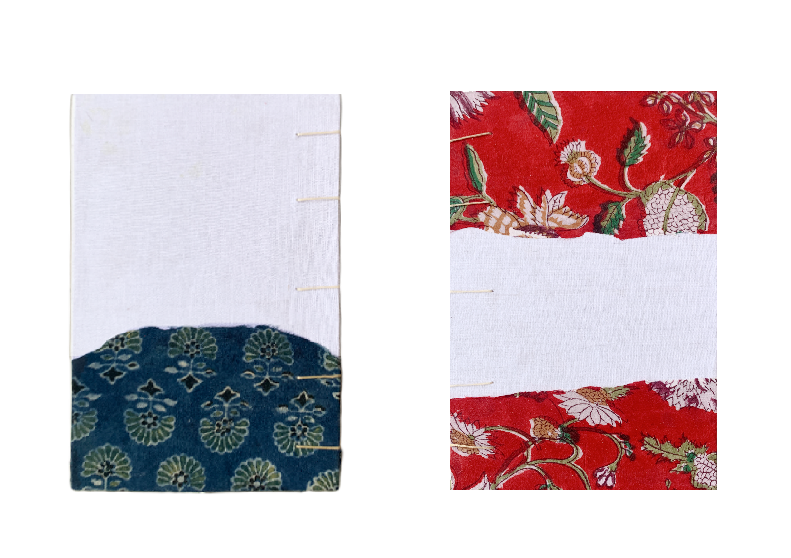
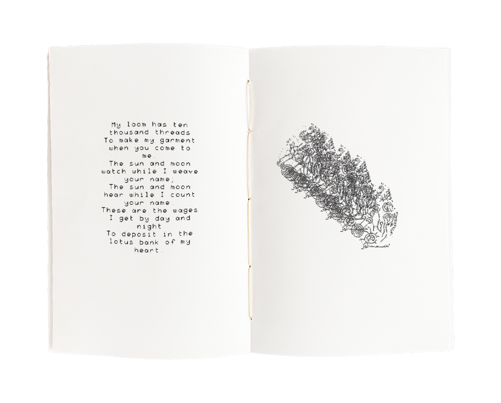
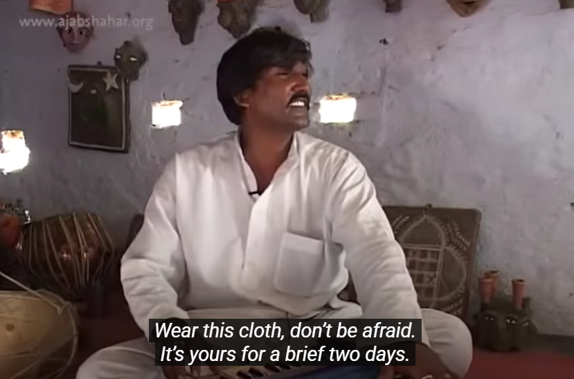

Ten Thousand Threads draws on Kabir Das’s poetry on the journey of a cloth, treating repurposed fabric as archives of labour. The hand-bound book, built from personal artifacts, explores the memory of labour, mirroring the weaving of cloth in weaving of pages. From the loom to the dye, the act of weaving–cloth or book– carries threads of devotion.

'“Memory is a kind of labor. To remember is to honor the hands that shaped the world before ours.” - Rivers Solomon, The Deep